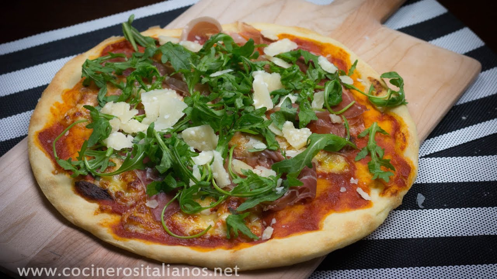

Inicio
Categorias
Italiana
Lasaña
Carbonara
Pizza
Mexicana
Contacto
Platillos
Pasta carbonara
Ingredientes
1 base para pizza
3 tomates (o más, dependiendo del tamaño de la base de la pizza)

2 tazas de leche (500 ml)
Queso mozzarella (fresca, en lonchas o rallada)
Rúcula
Jamón Serrano
Queso parmesano
Aceite de oliva
Sal
Preparacion
PASO 1: Tritura y tamiza los tomates.
PASO 2: Unta la base para pizza con el tomate triturado y sazónalo.
PASO 3: Añade un chorro de aceite de oliva a la base (en forma de espiral).
PASO 4: Extiende por la base el queso mozzarella.
PASO 5: Hornea la pizza en el horno precalentado a 250ºC en la parte más baja del horno. El tiempo dependerá del grosor de tu masa para pizza. Hasta que la mozzarella empiece a dorarse un poco.
PASO 6: Coloca trozos de jamón y la rúcula una vez que has sacado la pizza del horno.
Contacto
Whatsapp
Instagram
Facebook
Youtube